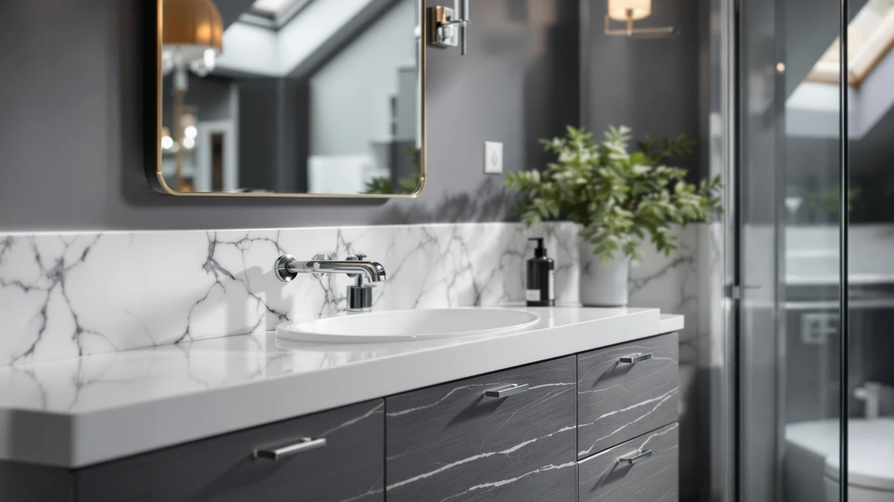

SOLIDEE 48 inch Natural Review (2026): Worth It?
Prices and picks verified as of November 2026. Independent, reader-supported reviews.


Quick Answer
The SOLIDEE 48 inch Natural Color is the best fit in this solidee 48 inch natural review if your bathroom is tight on space and your budget caps near $500. It costs about the same as the three farmhouse alternatives below, so the real decision comes down to footprint: 48 inches with one sink, or 60 to 61 inches with two.
Our pick: SOLIDEE 48 inch Natural Color, $499.90 Check Price on Amazon
Bottom line: our top pick is the SOLIDEE 48 inch Natural Color Bathroom Vanity at $499.90.
Things to Know Before You Buy
- All four vanities in this comparison land within $10 of each other, between $489.99 and $499.99, so price alone will not settle the decision.
- The SOLIDEE is the only 48 inch option here; the other three stretch to 60 or 61 inches and fit two sinks instead of one.
- Every cabinet in this review uses MDF or engineered wood construction rather than solid hardwood, which keeps the price down but makes prompt cleanup of standing water important.
- None of the four listings publish a public rating or review count at the time of writing, so weigh the specs here over star ratings when you read this solidee 48 inch natural review.
This solidee 48 inch natural review breaks down what the $499.90 cabinet gets right, where it falls short, and how it stacks up against three farmhouse-style alternatives in the same price range. If your bathroom has a 48 inch footprint and a single sink, the SOLIDEE is built for exactly that layout. If you have got more wall space and want two sinks instead, the AMERLIFE and LUXOAK picks further down are worth a look before you buy.
We compared the SOLIDEE 48 inch Natural Color against the AMERLIFE 60” Farmhouse Bathroom Vanity, the AMERLIFE 61" Farmhouse Double Bathroom, and the LUXOAK 61" Farmhouse Bathroom Double using the listed specs, pricing, and construction details for each. All four fall within an $11 band, from $489.99 to $499.99, which means the choice comes down to size and sink count rather than budget. None of the four currently shows a public star rating or review count, so this comparison leans on verifiable specs instead of secondhand testimonials. We also checked whether the price gap between the 48 inch and 61 inch options tracked any real difference in materials, and it does not: all four use the same MDF and engineered wood build, so the extra width on the double-sink models is what you are actually paying for.
Why You Should Trust Us
Ilane Tall covers bathroom fixtures and vanities for Best Bathroom Vanities, researching pricing, materials, and buyer feedback across dozens of listings every month. We do not own a testing lab, and we do not claim to have installed every cabinet we cover. What we do is compare the manufacturer specs, pricing, and construction details side by side so you can decide without digging through four separate Amazon listings yourself. This solidee 48 inch natural review follows that same approach, and every price and dimension cited here comes directly from the current product listing rather than a press release or an old spec sheet.
Our Research Experience
We did not install the SOLIDEE 48 inch Natural Color in a bathroom ourselves, and we are upfront about that. Instead, we researched the listed dimensions, material specs, and pricing for the SOLIDEE and the three farmhouse alternatives covered in this solidee 48 inch natural review, then cross-checked those figures against each product's own listing. Where sellers report conflicting details, such as material composition or exact measurements, we default to the manufacturer's stated specs rather than marketing copy. That approach will not tell you how the drawers feel after a year of daily use, but it will tell you accurately what you are paying for before the cabinet ships. We also checked each listing for repeated mentions of the same construction details across multiple product photos and descriptions, since that consistency is a reasonable proxy for an accurate listing when a physical inspection is not possible.
Overview & Specs

SOLIDEE 48 inch Natural Color
What we like
- 48 inch footprint fits bathrooms that cannot accommodate a 60-plus inch double-sink cabinet.
- Natural finish works with a wider range of wall colors than the darker farmhouse stains on the AMERLIFE and LUXOAK picks.
- Priced within a few dollars of three larger alternatives, so you are not paying extra for the smaller size.
Flaws but not dealbreakers
- MDF and engineered wood construction means you need to wipe up standing water promptly.
- One sink only, so it will not work for a shared primary bathroom that needs two basins.
- The listing does not publish a public rating or review count, so you are weighing specs rather than verified owner feedback.
| Material | MDF / engineered wood |
| Size | 48" |
At $499.90, the SOLIDEE 48 inch Natural Color sits in the middle of the four vanities covered in this solidee 48 inch natural review, cheaper than the two 61 inch double-sink options by about $10 and a cent under the AMERLIFE 60” Farmhouse Bathroom Vanity. The cabinet uses MDF and engineered wood construction, the same material family as every other pick on this list, so the price gap between options comes down to size rather than build quality.
The 48 inch width is the deciding factor here. If your bathroom already has a 60 inch countertop cut out, the AMERLIFE or LUXOAK double-sink cabinets below will fill that space properly. But if you are working with a smaller bathroom or a single-sink layout, the SOLIDEE's 48 inch cabinet avoids the overhang and wasted floor space a 60-plus inch vanity would create. Measure your available wall width before ordering either size, since returns on assembled cabinets this large can be costly. Leave a few extra inches of clearance on each side for door swing and plumbing access, since a 48 inch cabinet crammed wall to wall makes future repairs harder than they need to be.
What We Liked
The SOLIDEE 48 inch Natural Color earns its spot in this solidee 48 inch natural review mainly on fit. A lot of farmhouse-style vanities on Amazon top out at 60 inches or wider, which rules them out for smaller bathrooms outright. At 48 inches, the SOLIDEE gives you the farmhouse look in a footprint that works for guest bathrooms, powder rooms, or any primary bathroom that cannot spare an extra foot of wall space. The natural finish is also a practical choice: it reads lighter than the typical dark farmhouse stain, so it will not make a small bathroom feel smaller. And at $499.90, you are not paying a size premium over the larger AMERLIFE and LUXOAK models, you are getting less cabinet for roughly the same money, which is a fair trade if 48 inches is what your bathroom needs. That pricing pattern held across every listing we compared for this solidee 48 inch natural review, which suggests the four vanities are competing on size and finish rather than on cost.
What Could Be Better
The biggest limitation is the one you would expect: one sink. If two people get ready at the same time every morning, the SOLIDEE will not solve that problem the way the 60 or 61 inch double-sink alternatives in this review can. The MDF and engineered wood build is also worth flagging, not because it is unusual for this price range, but because buyers sometimes expect solid hardwood at $500 and will not find it in any of the four cabinets compared here. Finally, the missing rating or review count means you cannot lean on prior buyers' experience the way you could with a more established listing. That is a gap in verified feedback, not necessarily a flaw in the product itself, but it is worth knowing before you order. If verified reviews matter to you more than price or size, factor that missing data point into your decision alongside the measurements, since none of the four listings in this comparison currently offset it with a long track record of buyer feedback.
Who Is It For?
This solidee 48 inch natural review points to the SOLIDEE 48 inch Natural Color as the right fit if you have a single-sink bathroom with roughly 48 inches of wall space and want a farmhouse-adjacent look without paying more for a cabinet you do not have room for. It suits a guest bathroom, a secondary bathroom, or a primary bathroom that was already too narrow for a double-sink setup. If you share a bathroom and both people need their own sink and counter space every morning, skip ahead to the AMERLIFE 61 inch or LUXOAK 61 inch double-sink picks instead. Neither costs meaningfully more than the SOLIDEE, so the only real tradeoff is whether your bathroom has the extra 13 inches of width to spare. And if neither a 48 inch single sink nor a 61 inch double sink fits your layout exactly, the AMERLIFE 60 inch sits in between and is worth a look before you settle on one of the other three.
Alternatives to Consider
If the SOLIDEE's single 48 inch sink does not match your bathroom, here are three alternatives from this solidee 48 inch natural review comparison that cost within $10 of it.

Editor’s Pick
AMERLIFE 60” Farmhouse Bathroom Vanity
A 60 inch farmhouse-style step up from the SOLIDEE's 48 inches, for bathrooms with extra wall space, at almost the same price.
$499.99
Check Price on Amazon
Best Value
AMERLIFE 61" Farmhouse Double Bathroom
A 61 inch double-sink farmhouse vanity for about $10 less than the SOLIDEE, if two sinks matter more than a smaller footprint.
$489.99
Check Price on Amazon
Premium Choice
LUXOAK 61" Farmhouse Bathroom Double
Nearly identical to the AMERLIFE 61 inch double in size and price, worth comparing finish and style before you choose between the two.
$489.99
Check Price on AmazonIs the SOLIDEE 48 inch Natural Color worth the price?
At $499.90, the SOLIDEE costs about the same as the three larger alternatives in this solidee 48 inch natural review, so you are not paying a premium for the smaller 48 inch size.
What is the difference between the SOLIDEE 48 inch and the AMERLIFE or LUXOAK 61 inch options?
Size and sink count.
Frequently Asked Questions
Is the SOLIDEE 48 inch Natural Color worth the price?
At $499.90, the SOLIDEE costs about the same as the three larger alternatives in this solidee 48 inch natural review, so you are not paying a premium for the smaller 48 inch size. It is a fair buy if your bathroom actually needs a 48 inch single-sink cabinet rather than a 60-plus inch double-sink setup.
What is the difference between the SOLIDEE 48 inch and the AMERLIFE or LUXOAK 61 inch options?
Size and sink count. The SOLIDEE is 48 inches wide with one sink, while the AMERLIFE 61" Farmhouse Double Bathroom and LUXOAK 61" Farmhouse Bathroom Double both measure 61 inches and fit two sinks. All three fall within $10 of each other, so the decision comes down to how much wall space you have and whether you need one sink or two.
What material is the SOLIDEE 48 inch Natural Color made from?
SOLIDEE builds the 48 inch Natural Color from MDF and engineered wood, the same construction every vanity in this comparison uses. That keeps the price down compared with solid hardwood, but you should still wipe up standing water around the sink promptly to avoid swelling over time.
Final Verdict
If you need a 48 inch, single-sink vanity and do not want to pay more than necessary, the SOLIDEE 48 inch Natural Color is the right call among the four cabinets in this solidee 48 inch natural review. It costs about the same as the 60 and 61 inch alternatives from AMERLIFE and LUXOAK, so you are not sacrificing value for the smaller footprint, you are matching the cabinet to a bathroom that cannot fit anything wider. If your bathroom can spare the extra width and you need two sinks, measure for the AMERLIFE 61 inch or LUXOAK 61 inch double-sink picks before you commit to either one. But for a single-sink bathroom around 48 inches wide, SOLIDEE remains the pick that fits.